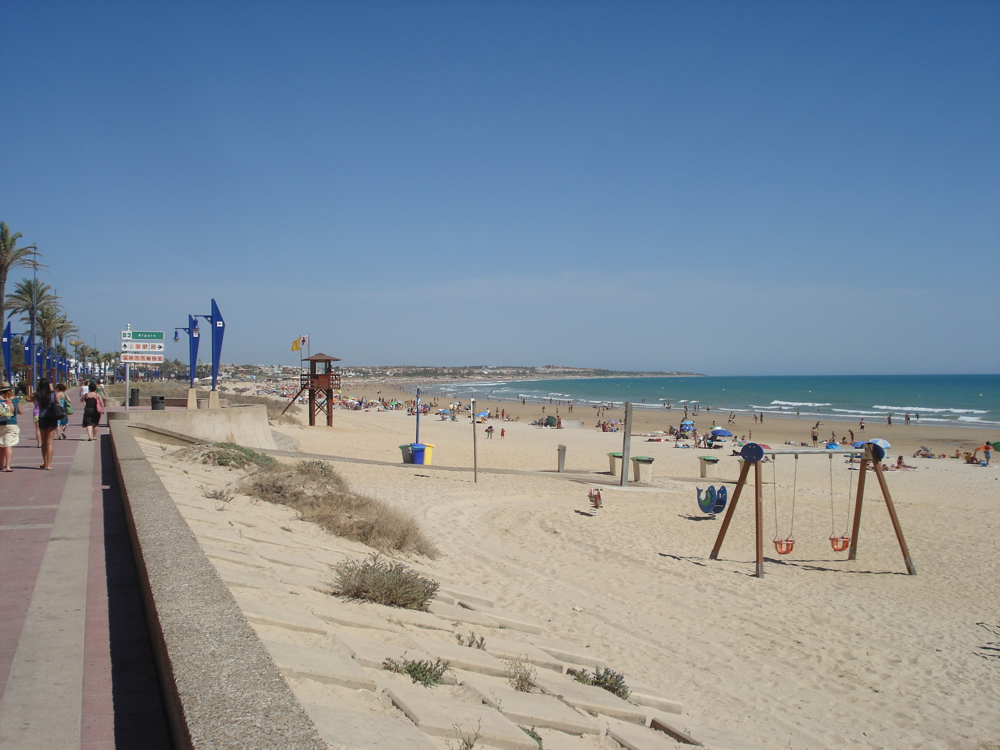
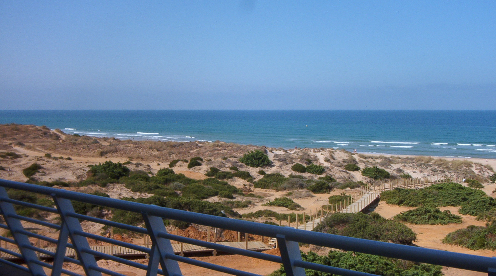

Beaches
The beaches in Chiclana are 7 kms from the town centre and are an important resource, both in terms of tourism and the natural environment.
La Barrosa Beach
This beach is approximately 6 kms long and has fine golden sand. The beach is divided into two clearly differentiated areas.
The Paseo Maritimo section is an urban beach with a one kilometre long pedestrian walkway which runs parallel to the beach, car parks, restaurants and beach bars etc. This area is perhaps the busiest all year round, especially in the summer.
The second section extends from the end of the Paseo Maritimo to the Torre del Puerco, the southernmost point of the Chiclana coastline. This area, highly important in terms of ecology, consists of pine trees and sand dunes which give it its unspoilt look.
Back from the beach, there are a wide variety of tourist facilities in the "Novo Sancti Petri" and Loma de Sancti Petri" areas with 4 and 5 star hotels, golf courses, sports and leisure facilities, shopping centres and health & beauty centres.
Basic Services:
Toilets, lifeguards, disabled rest areas, rubbish bins, showers, water fountains, footbaths, wooden walkways, public address system, watchtowers, beach signing.
Complementary Services:
Beach bars, sweet and ice-cream stalls, sun loungers and sunshades, activity and leisure areas, sports activities areas, sailing school, kindergarten, children's games, crafts market, and others.
Sancti Petri Beach
This is the other important beach in this area and is approximately 2 kms long. It is separated from La Barrosa beach by the Laja Bermeja headland. At low tide it is possible to walk from La Barrosa to Sancti Petri.
This area includes an artificial breakwater at the mouth of the Sancti Petri navigation channel, an area of ecological importance and Sancti Petri village, formerly inhabited by tuna fishermen.
Of particular interest are its marina, fishing port and water sports facilities including boat trips, windsurfing, sailing, canoeing, etc. It also boasts some wonderful sunsets.
Basic Services:
Toilets, lifeguards, rubbish bins, showers, footbaths, wooden walkways, public address system, watchtowers, beach signing.
Complementary Services:
Beach bars, activity and leisure areas, sailing school, children's games.